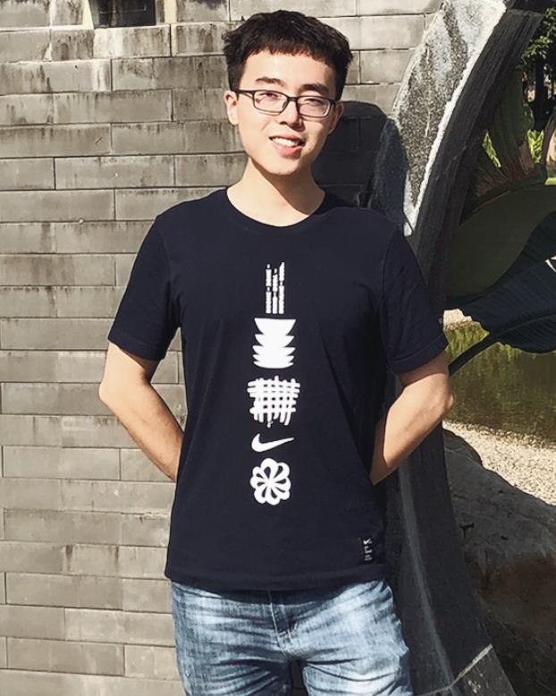
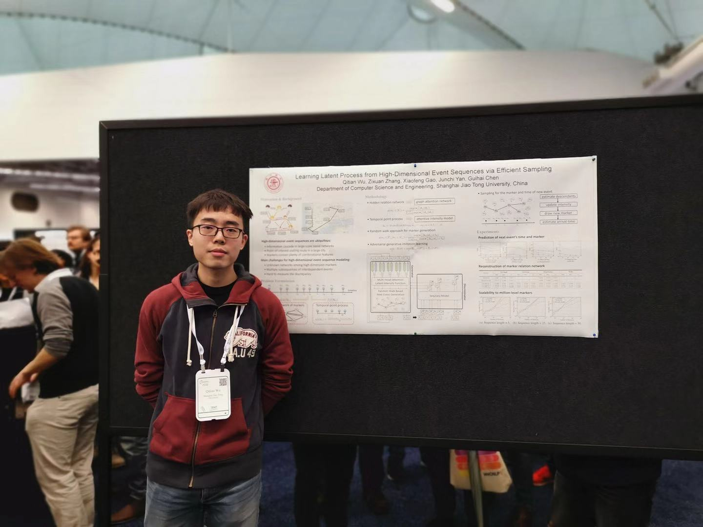
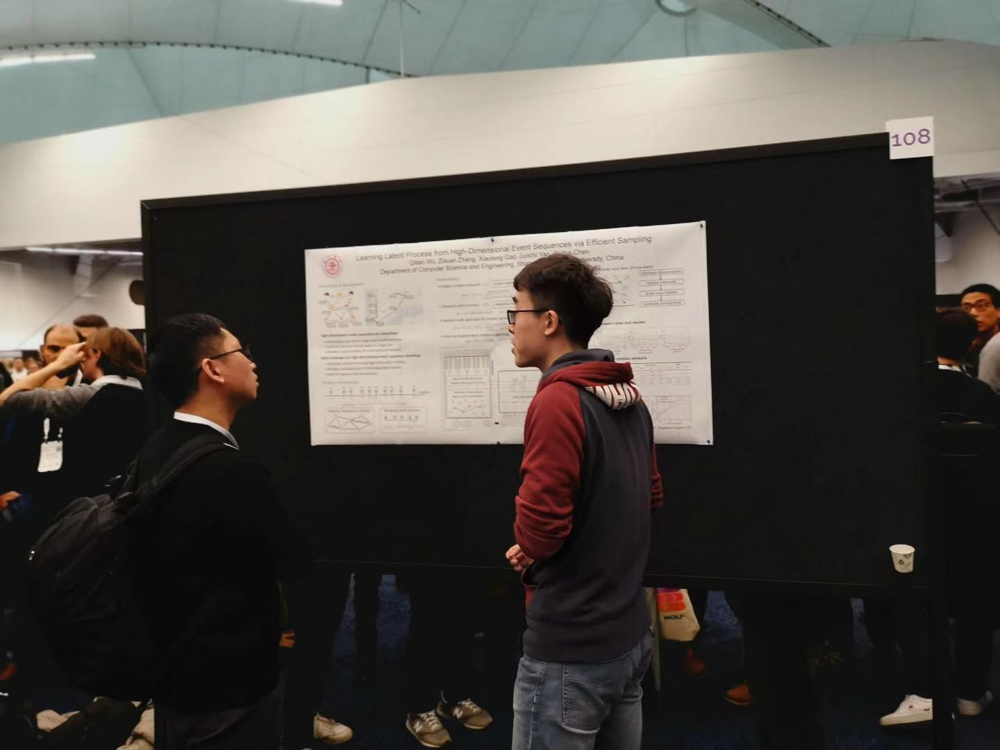
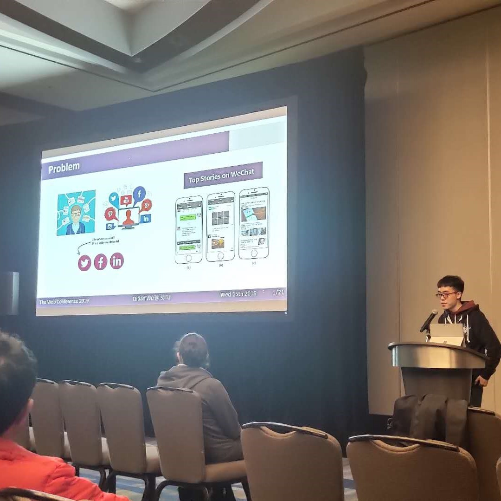
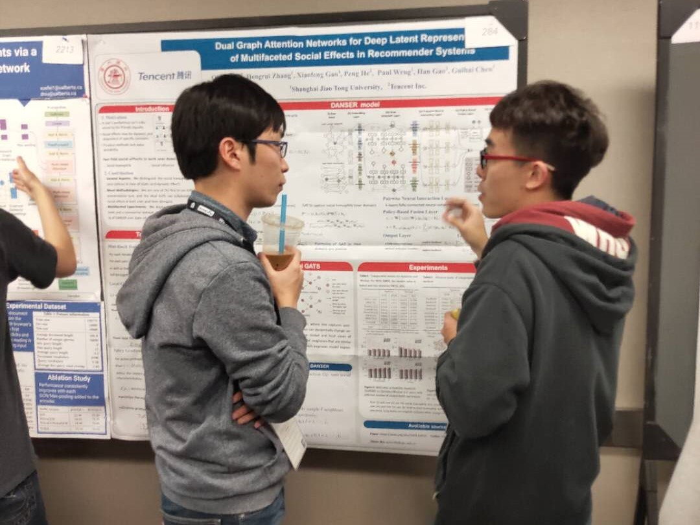
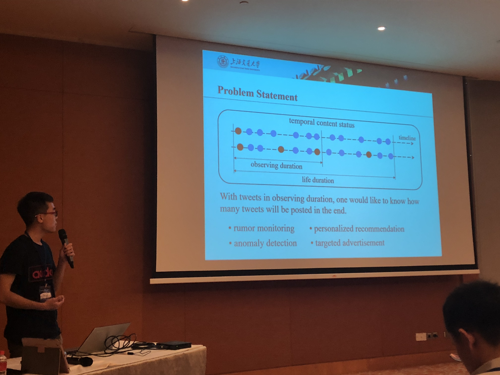
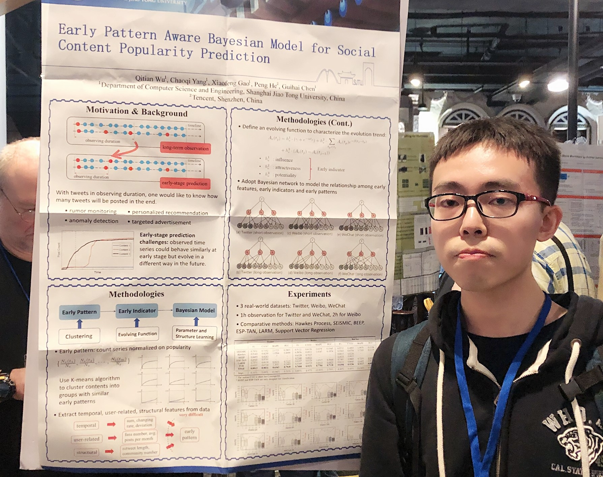

Qitian Wu
Shanghai Jiao Tong University |
|  |
I am now a second-year master student in Department of Computer Science and Engineering at Shanghai Jiao Tong University. I received my Bachelor Degrees of (I) Micro-Electronics Science and Engineering and (II) Mathematics and Applied Mathematics from Shanghai Jiao Tong University. My previous researches are mainly about machine learning and its applications in
I used a wide variety of techniques spanning from statistical machine learning to deep learning to solve these problems from different perspectives. On methodology side, I focus on some fundamental topics on deep generative models and representation learning. |
|---|
|  |  |
2019.12: I attended NeurIPS'19 at Vancouver, Canada, and gave a poster presentation for our paper. |
|  |  |
2019.05: I gave an oral presentation about our work in WWW'19 conference at San Francisco, USA. |
|  |  |
2018.11: I attended ICDM'18 conference held at Singapore and gave an presentation about our work. |